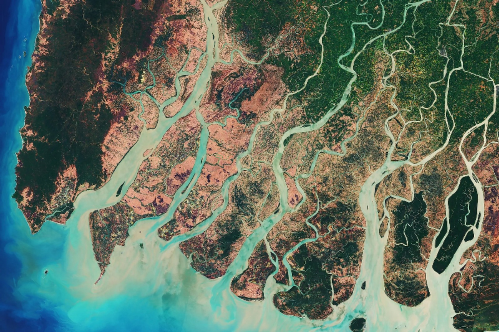

この作品について
We will be writing about this film as we are making it. Any thoughts or collaborators are welcome. If you want to read my thoughts about the film, look below ↓

As AI provides new ways to give voice to the river, its water-hungry infrastructure poses a threat to the same entity it helps us hear. To better understand the river may mean reconnecting with older ways of listening - through science, ceremony and art.
We will be writing about this film as we are making it. Any thoughts or collaborators are welcome. If you want to read my thoughts about the film, look below ↓